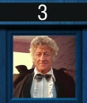
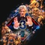
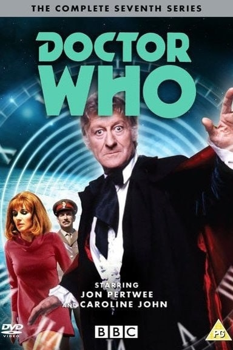
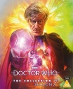
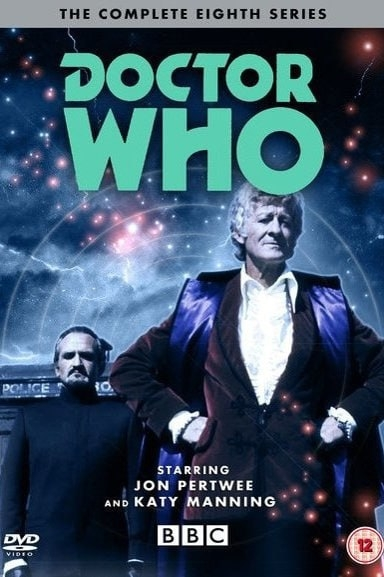
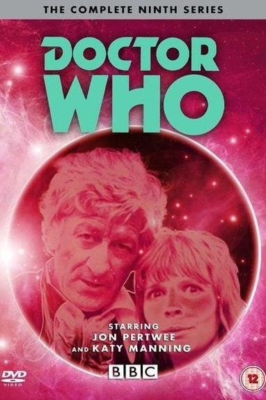
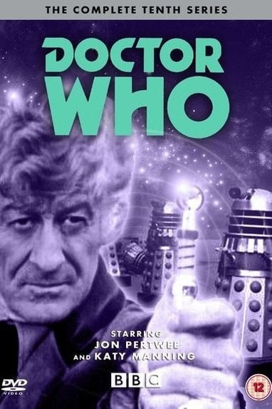
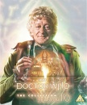
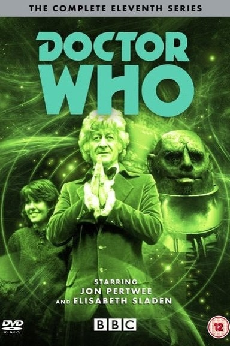

Таблица коллекции |  Навигация по канону |  Связные экранизации |
Таблица коллекции | Навигация по канону | Связные экранизации |






Эра Третьего Доктора
Актёр: Джон Пертви


Начало эры Третьего Доктора: сосланный Повелителями Времени на Землю, он застрял без ТАРДИС и работает с UNIT под началом бригадира Летбридж-Стюарта, а спутницей становится учёная Лиз Шоу. Сезон строится на земных угрозах: автоны, силурианцы и инопланетные послы — и каждый раз Доктор балансирует между наукой и военной силой, которую олицетворяет бригадир. «Инферно» закрывает сезон параллельной вселенной на грани гибели, доказывая: любопытство Доктора спасает миры, а изгнание не сломало его, а переформатировало.
Варианты озвучек, подробности выхода и другие ссылки на просмотр в описаниях серийНаш плейлист сезона в ВК
Таблица сезонов и озвучек

Третий Доктор на Земле: к нему присоединяется новая спутница Джо Грант, а главным антагонистом сезона становится Мастер — давний соперник Повелителей Времени, который появляется почти в каждой серии. Сезон строится на череде земных угроз: автоны снова атакуют, машина Келлера подчиняет людей, Аксос предлагает человечеству золотой век с подвохом, а в финале «Демоны» сталкивают науку с суевериями. Доктор всё ещё застрял без ТАРДИС, но именно земной формат делает сезон цельным: Мастер и Доктор — два гения, которые не могут друг без друга.
Варианты озвучек, подробности выхода и другие ссылки на просмотр в описаниях серий

Третий Доктор и Джо Грант сражаются с далеками, Морскими дьяволами и иными угрозами; Мастер возвращается в паре историй. Сезон смещает фокус: от земных кризисов — к межпланетным и временны́м, а кульминация («Временной монстр») раскрывает новые грани власти над временем — и цену, которую за неё платят.
Варианты озвучек, подробности выхода и другие ссылки на просмотр в описаниях серий


Третий Доктор и Джо Грант сталкиваются с далёкими угрозами: в «Трёх Докторах» объединяются с прошлыми воплощениями против Омеги, затем — драконианцы, далеки и экологическая катастрофа в «Зелёной смерти». Сезон подводит к прощанию с Джо и показывает, что даже в борьбе с галактическими силами Доктор не забывает о земных проблемах — и о цене каждого вмешательства.
Варианты озвучек, подробности выхода и другие ссылки на просмотр в описаниях серий

Третий Доктор и Сара Джейн Смит сталкиваются с сонтаранцами, динозаврами, далеками и гигантскими пауками; в финале Доктор регенерирует. Сезон соединяет масштабные угрозы с личными ставками — и подводит черту под эрой Третьего Доктора.
Варианты озвучек, подробности выхода и другие ссылки на просмотр в описаниях серий